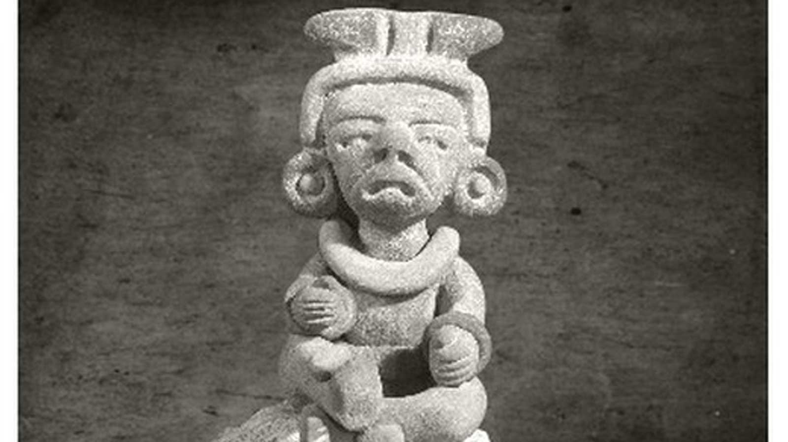
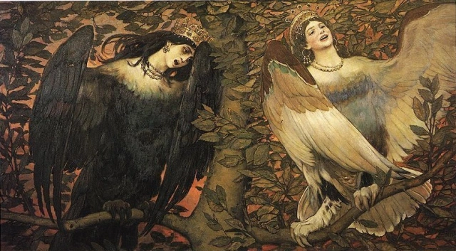
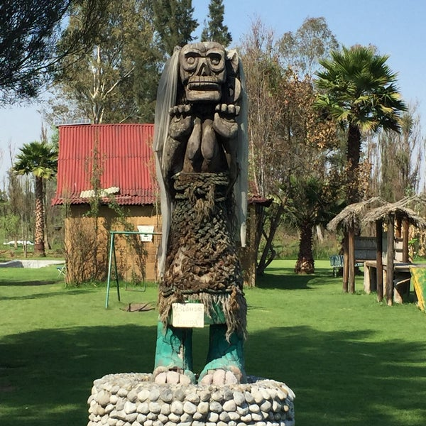

Los Aluxes
Los Aluxes, son pequeños duendes o elfos de la mitología maya.
Estas criaturas habitan en lugares naturales como selvas, grutas o cenotes.

Según la leyenda, los Aluxes se visten como antiguos mayas y juegan artimañas a aquellos que no les dejan
ofrendas. Además, tienen la capacidad de espantar o proteger a los viajeros y a quienes visitan sus lugares
preferidos. Se cree que al construir una vivienda o una milpa, es importante dejar ofrendas y hacer un altar
para estos seres, ya que ayudan a crecer el maíz, llaman la lluvia y vigilan los campos de noche. Sin embargo,
si uno es irrespetuoso con los santuarios o lugares naturales, los Aluxes pueden volverse malvados.
Más información
Arpías
Las Arpías son monstruos mitad mujer, mitad pájaro. Originalmente, se describían
como hermosas mujeres aladas y personificaban los vientos tormentosos. Estaban al
servicio de Zeus, quien las enviaba durante las tormentas para cumplir sus deseos.

Con el tiempo, su apariencia cambió y se volvieron horribles: parte mujer, parte
ave de presa, con garras y alas. Eran temidas y cualquier cosa que tocaran olía mal.
En las historias de Jasón y los argonautas, se describen como criaturas con cuerpo
de buitre, orejas de oso y cara de mujer. Las representaciones artísticas de las
arpías se encuentran en vasijas griegas y esculturas de templos.
Más información
La llorona
La Llorona es una leyenda profundamente arraigada en la cultura hispanoamericana.
Se la describe como una mujer vestida de blanco, con el rostro cubierto por un velo.

Durante las noches, vaga llorando y lamentándose por un terrible crimen: la muerte de
sus propios hijos. Según la leyenda, tras ser abandonada por su marido y sin medios
para subsistir, decidió ahogar a sus pequeños en un río. Su alma en pena se manifiesta
y se dice que su encuentro trae mala suerte.Aunque el origen exacto de esta leyenda es
incierto, existen similitudes con figuras prehispánicas y versiones que datan de la época
colonial